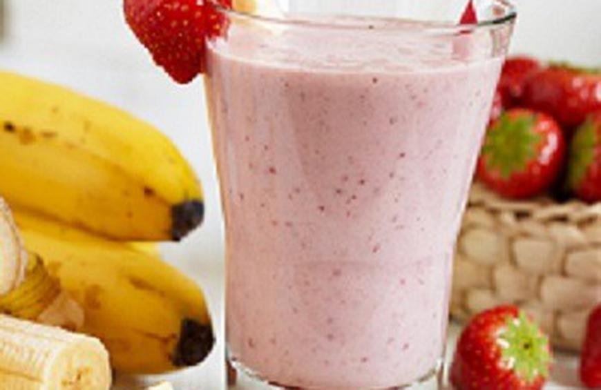

Ryan's shopping list website
This website is a simple example of how to structure and style a webpage through html and css
The shopping list
- frozen strawberries
- orange juice
- greek yogurt
- kale
- bananas
- bagels
- swiss cheese
- deli meat

Steps to make strawberry smoothie
- Place frozen strawberries, orange juice, greek yogurt, kale, bananas, and a blender on the counter
- Open the blender and put in 1/2 cup of strawberries and a handful of kale
- Cut the banana into small pieces put those pieces into the blender as well
- Measure 3/4 cup of greek yogurt and 1/4 cup of orange juice and pour those into the blender
- Blend to the desired consistency
- Enjoy!